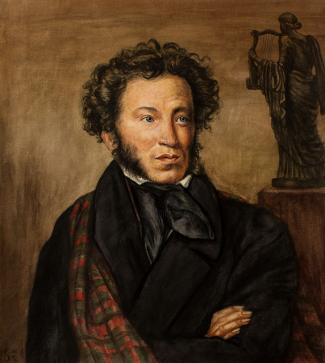

|  | ALEKSANDR SERGEYEVICH PUSHKIN |
|---|
Aleksandr Sergeyevich Pushkin (1799-yil 26-may (6-iyun) Moskva — 1837-yil 29-yanvar (10-fevral) Sankt-Peterburg) - ulugʻ rus adibi, yangi rus adabiyotining asoschisi, dramaturg va nasr yozuvchi.
Otasi Sergey Lvovich qadimiy dvoryanlar avlodidan, gvardiya ofitseri boʻlib, fransuzcha she'rlar yozib turardi. Onasi Nadejda Osipovna Pyotrning tarbiyasida boʻlgan habash A.P. Gannibal (asli ismi Ibrohim) ning nevarasi edi. Ota-onasi yosh Pushkinni buvisi Marya Alekseyevna va enagasi Arina Rodionovna tarbiyasiga topshirgan. Uning amakisi Vasiliy Lvovich oʻsha davrning koʻzga koʻringan shoirlardan boʻlib, Pushkinlarnikiga taniqli shoirlar tez-tez mehmon boʻlib kelardi. Bu muhit Pushkinda she'riyatga havas uygʻotdi. 1811-1817-yillarda u Sarskoe selodagi litseyda ta'lim olgan. Pushkinning dastlabki she'ri matbuotda 1814-yildayoq bosilgan edi. 1833-yil dekabrida Nikolay I Pushkinni kamer — yunker qilib tayinlagan. 1837-yilda yosh fransuz ofitseri Jorj Dantes bilan duelda Pushkin ogʻir yaralanib, vafot etadi.
Pushkinning koʻplab asarlari oʻzbek tiliga tarjima qilingan («Boris Godunov», «Dubrovskiy», «Kavkaz asiri» Choʻlpon tomonidan (1936-37), «Yevgeniy Onegin» Oybek tomonidan (1937), «Boqchasaroy fontani» Usmon Nosir tomonidan (1937), «Kapitan qizi» Abdulla Qahhor tomonidan (1939), «Ruslan va Lyudmila» Mirtemir tomonidan (1948) tarjima qilingan).
Pushkin Aleksandr Sergeyevich (1799.26.5 (6.6), Moskva — 1837.29.1 (10.2), Peterburg) — rus yozuvchisi, yangi rus adabiyotining asoschisi. Otasi Sergey Lvovich kadimgi dvoryanlar qavmidan, onasi Nadejda Osipovna esa Pyotr I qoʻlida tarbiya koʻrgan habash — A.P.Gannibalning nabirasi bulgan. P.da nafis soʻzga mehrmuhabbatning paydo bulishida rus xalq qushiqlari hamda ertaklarini yaxshi bilgan ena-gasi Arina Rodionovnaning taʼsiri, ayniqsa, kattadir. Oʻsha davrning eng nufuzli oʻquv yurtlaridan biri — Peterburg yaqinidagi Sarskoye selo (hozirgi Pushkin sh.) litseyida oʻqish (1811—17) P.ning shoir va erksevar inson sifatida shakllanishida muhim omil boʻlgan. P. litseyni tugatgach, Peter-burgga kuchib borgan va tashki ishlar kollegiyasida kotib lavozimida ishlagan. U Peterburgda xizmat qilgan yillar (1817—20) Rossiyaning tarixiy ta-raqqiyoti uchun muhim bir davr edi.
P.ning dastlabki sheʼrlari 1913 yilda matbuot yuzini kurdi. U litseyda oʻqib yurgan kezlarida 120 ga yaqin sheʼr va 2 doston (tugallanmagan) yozadi. Litsey bilan xayrlashuv kechasiga bagʻishlangan sheʼri esa shu kechada qatnashgan G. R. Derjavinnnt yuksak bahosiga sazovor bulib, u P.ning buyuk shoir boʻlib yetishishini bashorat qiladi. Keyinchalik P. rus jamiyatida uygʻonib borayotgan erksevarlik kayfiyati taʼsirida "Erkinlik" (1817), "Chaadayevga" (1818), "Qishloq" (1819) singari sheʼrlarni yaratadi.
P.ga qadar rus sheʼriyatida qasida, marsiya, xat singari har bir sheʼriy janr klassitsizm tomonidan belgilangan qatʼiy qonun-qoidalar asosida yozilgan. P. itsey lirikasidan farqli oʻlaroq, Peterburg davri ijodida sheʼriy janrlar urtasidagi chegaralar va uslubiy farqlarni bartaraf etib, rus sheʼriya-ti taraqqiyoti uchun yangi badiiy ufqlarni ochib bergan ("Ruslan va Lyudmila", 1820).
P. ijodining tadrijiy yulini shartli ravishda 4 bosqichga ajratish mumkin. Agar 1813—16 yillarni uz ichiga olgan l-bosqichda P. uz zamondoshlarining badiiy tajribasini oʻzlashtirgan boʻlsa, 2-bosqich (1817—20) da P. ijodining gʻoya va mavzular olami ken-gayib, u oʻz uslubiga erishish yoʻlida badiiy izlanishlar olib borib, ki-tobiy til bilan jonli xalq tilini uzaro yaqinlashtirdi. Shoirning 1820—24 yillar ijodida (3-bosqich) romantizm ustuvorlik qildi. Ammo kup utmay, P. qahramonni poetiklashtirish va vokelikni ehtiros bilan tasvirlashda davom etgan holda romantik tasvir metodidan chekindi. P. ijodining 1925 yildan boshlangan 4-bosqichida obrazlar va mavzular kulamini chegaralashning har qanday kurinishini rad etuvchi, fikr bilan tuygʻuni, haqiqatni tadqiq etish bilan "jonli tasavvur"ni oʻzaro uygʻunlashtirishga asoslangan realistik ti-zimni ishlab chiqdi P. ning rus jamiyatidagi erksevar kuchlar taʼsirida yozilgan zulm va krepostnoylikni fosh etuvchi sheʼrlari chor hukumatida norozilik kayfiyatini uygʻotdi. 1819 yilda P. ning "Yashil chirok" tugaragida ishtirok etishi esa Aleksandr I ni nihoyatda gʻazablantirdi. U 1820 y. mayida P.ni Yekaterinoslavga surgun qildi. Shoir Yekaterinoslavga yetib kelishi bilan xastalikka yoʻliqadi va ittifokr shu yerda qoʻnoqda boʻlgan general N.N.Rayevskiyning oilasi bilan birga dastlab Kavkazga, keyin Qrimga yoʻl oladi.
Rossiyaning janubida yashash P. ijodida yangi davrning boshlanishiga imkon berdi. U dastlab J. Bayron taʼsirida romantik dostonlarini yezdi. P. romantizmining ilk namunasi — "Kavkaz asiri" dostoni (1820—21) 20-yillardagi erksevar yoshlar kayfiyatini ifodalagani uchun ular oʻrtasida katta muvaffaqiyat qozondi. P. voqelikni romantik boʻyoqlar bilan tasvir etishda davom etib, "Aka-uka qaroqchilar" (1821—22) va "Boqchasaroy fontani" (1923) dostonlarini yaratdi. "Loʻlilar" dostoni esa P.ning ijodiy tadrijida roʻy bergan jiddiy burilishning samarasi boʻldi. P.ning romantik dostonlari va shu yillar lirikasi ("Demon", "Dengizga" va boshqalar) yagona gʻoyaviybadiiy yoʻnalishga ega boʻlib, ular psixologik tasvirning teranligi, ruhiy olam, tabiat va tevarak-atrofdagi hayotiy hodisalar oʻrtasidagi aloqalarning rang-barangligi bilan ajraladi.
1824 y. P. xizmat vazifasidan ozod etilib, Mixaylovskoye qishlogʻi (Pskov) ga surgunga yuboriladi. Ikkinchi marta tazyiqqa uchragan shoir qisqa muddatli ruhiy ezilishdan soʻng mutolaaga berilib, shu atrofdagi aholining ertak va qoʻshiklarini toʻplaydi, "Boris Godunov" tragediyasi (1825), "Graf Nulin" dostoni, "Qurʼonga ta-tabbu", "Andrey Shenʼye", "19 oktyabr" va boshqa mashhur sheʼrlarini yozadi, "Yevgeniy Onegin" sheʼriy romani ustidagi ishni davom ettiradi. "Boris Godunov" P.ning dramaturgiya sohasidagi dastlabki tajribasi boʻlsada, shoir unda Shekspir anʼanalariga tayangan holda dramatik sanʼatning yangi yoʻllarini kashf etadi, xalq bilan hoki-miyat oʻrtasidagi munosabatni asar mar-kaziga olib chiqadi. "Boris Godunov"ni yaratish asnosida ishlab chiqilgan badiiy tamoyillar (tarixiylikka institutilish, insoniy kechinmalarni barcha ranglari bilan mujassamlashtirish, xa-rakterlarga xos hayotiy murakkablikni ochish va boshqalar) P.ning keyingi ijo-dida oʻz samaralarini berdi.
20-yillar oxiri — 30 yillar boshlarida P. ijodida realizm tantana qilib, u "Graf Nulin"dan tashqari, "Poltava" (1828—9), "Kolomnadagi uy" (1830), "Mis chavandoz" (1833) dostonlari va keyinchalik shoirning "kichik tragediyalar"ini tashkil etgan baʼzi bir pyesalari hamda nasriy asarlari ("Belkin qissalari", "Kapitan qizi" va boshqalar)ni yaratadi. P. shu davrda lirikada badiiy realizmning yuksak bosqichiga erishadi.
20-yillarning 2yarmida P. "Yevgeniy Onegin" ustidagi ijodiy ishini davom ettirdi. Sheʼriy romanning 1833 yilda toʻla holda nashr etilishi rus ada-biyoti tarixida ulkan voqea boʻldi. Garchand sheʼriyatning bu janri rus ada-biyotida keyinchalik izchil davom et-tirilmagan boʻlsada, bu asarda kashf etilgan yangi realistik tasvir meto-di va yangi estetika tamoyillari rus adabiyetining keyingi taraqqiyoti uchun gʻoyat katta ahamiyatga molik boʻldi. P. asarda polifonik tasvir usulining shunday yoʻllarini topdiki, ular vo-qelikni keng qamrab olish, muhim hayotiy muammolarni tasvir doirasiga olib kirish, epik va lirik ibtidolarni uzviylashtirish imkonini berdi. Natijada romanda P. yashagan davrning muhim masalalari oʻz inʼikosini topdi, oʻsha davrda keng tarqalgan kishilar harakteri tarixiy, ijtimoiy va maishiy sharoit fonida zoʻr ma-horat bilan tasvir etildi.
P. 1830 y. kuzini Boldino qishlogʻida oʻtkazdi. Rus adabiyoti tarixiga "Boldino kuzi" sifatida kirgan bu davrda shoir "Kolomnadagi uy" dostoni, "Belkin qissalari", shuningdek, boshqa "kichik tragediyalar"ini ijod qildi. Bu asarlarning har biri, ayniqsa, "Xasis ritsar", "Oʻlat chogʻidagi bazm", "Tosh mehmon", "Motsart va Salyeri" "kichik tragediyalar"i olamshumul ahamiyatga molik masalalarni koʻtarganligi bilan P. ijodida alohida bir sahifani tashkil etadi.
P. 1831 y. yozida sharoit taqozosi bilan davlat idoralarida ishlashga majbur boʻladi. U tashki ishlar kollegiyasida xizmat qilar ekan, davlat arxivida ishlash imkoniyatidan foydalanib, Buyuk Pyotr tarixini yozmoqchi boʻladi. Arxivda ishlash P.ga Rossiyaning tarixi va hozirgi davridagi murakkab masalalarni toʻgʻri tushuntirish imkonini beradi. U siyosiy tuzum, "yangi maʼri-fat", Yevropa mamlakatlari mohiyati toʻtrisida oʻylab, tanqidiy xulosalarga keladi va feodal tuzumning chiriganiga ishonch hosil qiladi. P.ning "Mis chavandoz" dostoni uning dunyoqarashida roʻy bergan ana shunday oʻzgarishlarning natijasi sifatida may-donga keladi. Rossiyaning yangi, kapi-talistik taraqqiyot bosqichiga oʻta boshlagani P.ning "Pikovaya dama" (1833) qissasida oʻz tajassumini topgan.
P. 30-yillar Rossiya tarixi bilan qiziqib, Pugachyov qoʻzgʻolonining paydo boʻlish sabablarini qunt bilan oʻrgan-di, qoʻzgʻolon sodir boʻlgan joylarga borib, rus xalq qoʻshiqlari, ertak va rivoyatlarni yozib oldi. P. Pugachyov qoʻzgʻoloni haqida toʻplagan bu mate-riallardan "Pugachyov tarixi" asari (1833), "Dubrovskiy" (1832—33) va "Kapitan qizi" (1833—36) qissalarida samarali foydalandi. Rus xalq ogʻzaki ijodi namunalariga qiziqish natijasida P.ning "Pop va uning xizmatkori Balda haqida ertak" (1830), "Shoh Sulton haqida ertak" (1831), "Baliqchi va baliq haqida ertak" (1833), "Oltin xoʻrozcha haqida ertak" (1834) singari folklor motivlari bilan sugʻorilgan asarlari maydonga keldi va bu asarlar P. ijodi dagi xalqchillikning yanada oshishiga sababchi boʻldi.
P. 1831—32 yillarda doʻstlari tomo-nidan nashr etilgan "Literaturnaya gazeta" ("Adabiyot gazetasi")da faol ishtirok etib, adabiyotda xalqchillik va realizmning tantana qozonishi uchun kurashdi. Uzoq davom etgan saʼy-harakatdan soʻng 1836 y. apr.da "Sovremennik" ("Zamondosh") jur.ning 1sonini chiqarishga muvaffaq boʻldi. P.ning rus adabiyoti oldidagi xizmatlari buyuklashgan va ijodiy faoliyati yangiyangi qirralar kasb etib borgani sayin uning atrofidagi kora kuchlar tobora birlasha va faollasha boshladilar. Shuning natijasi oʻlaroq uning J. Dantes bilan dueli uyushtirilib, ulugʻ rus shoiri halok etildi.
P.ning rus madaniyati takdiridagi roli benihoya buyuk. U yangi rus adabiyotiga asos solish bilan birga rus adabiy tilining ham shakllanishiga ulkan hissa qoʻshdi. Rus adabiyotida realizm va xalqchillik tamoyillarining, qator sheʼriy janrlarning shakllanishi va taraqqiyoti P. nomi bilan chambarchas boglik, P. ning rang-barang ijodi nafaqat keyingi rus adabiyoti, balki mu-siqa, teatr, balet, rangtasvir singari sanʼat turlarining ham rivojlanishiga katta taʼsir koʻrsatdi. Boshqa qardosh adabiyotlar qatori 20-asr oʻzbek adabiyetining taraqqiyotida ham P. ijo-dining taʼsiri sezilarlidir.